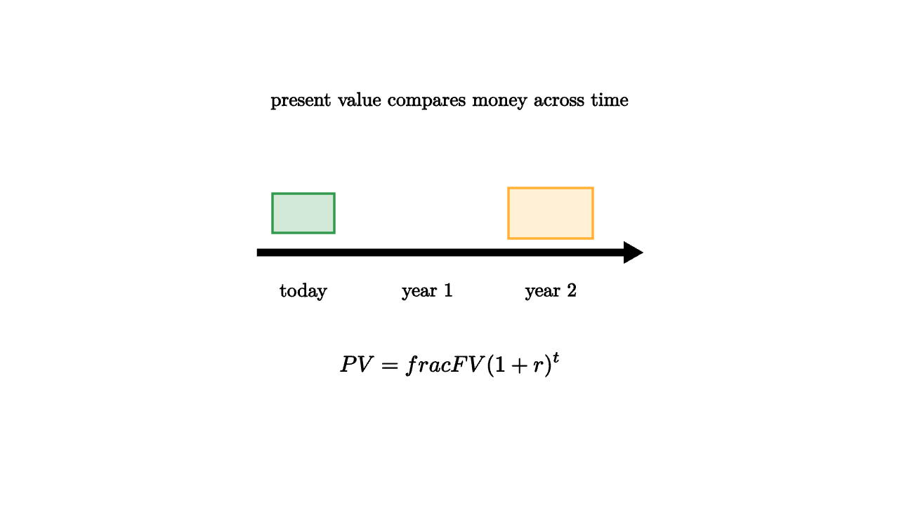

Money at different times cannot be compared by raw amount alone. A dollar today can be saved, invested, spent, or used to avoid borrowing. A dollar next year arrives too late for those uses. Discounting is the mathematical method for translating future payoffs into present value.
A simple offer makes the issue concrete. Would you rather receive $100$ today or $110$ one year from now? If you can safely earn 5 percent interest, $100$ today grows to $105$ in a year, so $110$ next year is financially better. If you urgently need the money to avoid a fee today, the present dollar may be more valuable. Discounting supplies the arithmetic; context supplies the opportunity cost.

source
let soft = |col, amount| lerp(WHITE, col, amount)
mesh timeline = [
center{1.35u} Text("present value compares money across time", 0.62),
stroke{BLACK, 2.5} Arrow(1.7l, 1.7r),
center{1.3l + 0.35d} Text("today", 0.62),
center{0.2l + 0.35d} Text("year 1", 0.62),
center{0.9r + 0.35d} Text("year 2", 0.62),
center{1.3l + 0.35u} fill{soft(GREEN, 0.22)} stroke{GREEN, 2} Rect([0.55, 0.35]),
center{0.9r + 0.35u} fill{soft(ORANGE, 0.2)} stroke{ORANGE, 2} Rect([0.75, 0.45]),
center{1.0d} Tex("PV = \\frac{FV}{(1+r)^t}", 0.72)
]If the interest rate is r, then one unit today grows to (1+r)^t units after t periods. So a future amount is divided by that same growth factor to find its present value. The larger the interest rate or the farther away the payoff, the smaller the present value.
For example, $121$ received two years from now has present value
when the annual discount rate is 10 percent. The future amount is larger in dollars, yet it is equivalent to $100$ today under that rate. The rate is the exchange rate between time periods.
This is not only finance. Discounting appears in climate policy, education, health, infrastructure, and personal planning. A bridge repair today may prevent larger costs later. A medical intervention may create years of future benefit. The discount rate quietly shapes whether those future benefits look large or small in today's decision.
A higher discount rate makes distant outcomes fade quickly. At 2 percent, benefits fifty years from now still carry meaningful weight. At 10 percent, the same benefits shrink dramatically in present value. That difference is why debates about public investment often sound technical while hiding moral choices about patience, uncertainty, and responsibility to future people.
source
let soft = |col, amount| lerp(WHITE, col, amount)
"Future Cash"
mesh bars = [
center{1.25u} Text("same future amount", 0.62),
center{1.0l + 0.35d} fill{soft(ORANGE, 0.2)} stroke{ORANGE, 2} Rect([0.5, 0.8]),
center{0.1r + 0.35d} fill{soft(ORANGE, 0.2)} stroke{ORANGE, 2} Rect([0.5, 0.8]),
center{1.1r + 0.35d} fill{soft(ORANGE, 0.2)} stroke{ORANGE, 2} Rect([0.5, 0.8])
]
play Grow(0.7)
"Discount"
bars = [
center{1.25u} Text("farther payments shrink more today", 0.62),
center{1.0l + 0.5d} fill{soft(GREEN, 0.22)} stroke{GREEN, 2} Rect([0.5, 0.55]),
center{0.1r + 0.6d} fill{soft(GREEN, 0.22)} stroke{GREEN, 2} Rect([0.5, 0.35]),
center{1.1r + 0.7d} fill{soft(GREEN, 0.22)} stroke{GREEN, 2} Rect([0.5, 0.15])
]
play Trans(1.0)
"Rate Choice"
bars = [
center{1.25u} Text("the rate is an ethical and empirical choice", 0.62),
center{0r} Tex("higher r \\Rightarrow less weight on the future", 0.62)
]
play Trans(0.8)The mathematics is simple enough to teach early, but the interpretation is serious. A market interest rate measures one kind of opportunity cost. A social discount rate also reflects how much current decision makers value future people. Economics turns time into arithmetic, and then asks us to defend the arithmetic.
There is also a risk dimension. A guaranteed future payment and a risky future payment should not always use the same rate. Riskier cash flows often need a larger expected return to be attractive, while safe government-like cash flows may be discounted at a lower rate. Careful discounting asks what is delayed, how uncertain it is, and whose patience is being represented.
The lesson to keep: present value is a bridge between dates. The bridge is built from growth, opportunity cost, patience, and risk.